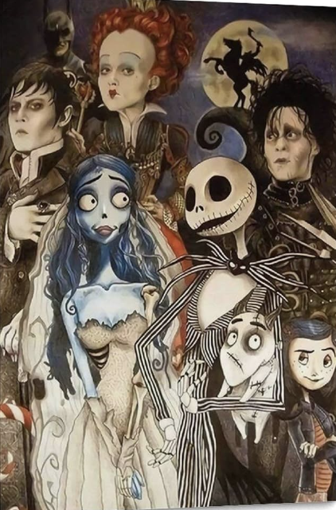

Tim Burton
Tim Burton's iconic look
Timothy Walter Burton[a] (born August 25, 1958) is an American animator, director,
producer, writer and illustrator. Known for pioneering Goth culture in the American film industry,
Burton is famous for his gothic horror and fantasy films
Burton was born on August 25, 1958,
in Burbank, California, the son of Jean Burton (née Erickson), who in the 1980s was the owner of
a cat-themed gift shop, and William "Bill" Burton , a former minor league baseball player, who worked
for many years for the Burbank Parks and Recreation Department. The baseball field at Olive Recreation
Center in Burbank, California is named for Bill Burton.
Curious to dive deeper into Tim Burton's world? Click here to explore!
Early work and breakthrough
Stalk of the Celery Monster attracted the attention of Walt Disney Productions, which offered Burton an animator's apprenticeship at its animation division. While at Disney in 1982, Burton made his first short, Vincent, a six-minute black-and-white stop motion film based on a poem written by Burton, which depicts a young boy who fantasizes that he is his hero Vincent Price, with Price himself providing narration.
2022–present: Wednesday and resurgence
In February 2021, it was announced that Burton would be directing and producing Wednesday, a series for Netflix based on the titular character from The Addams Family starring Jenna Ortega and Christina Ricci.[50][51] This marked Burton's first foray into directing television since the 1980s. He helmed four episodes in the first season, which began production in September 2021 for a November 2022 release.